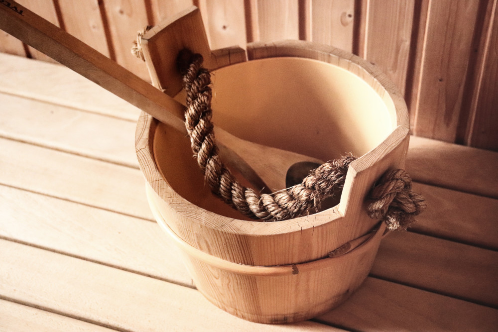

Як вдало піти в сауну?
Дослідники кажуть про те, що вона таки знижує серцево-судинні ризики. Трохи парадоксально, але це той випадок, коли ти наче лежиш і нічого не робиш, але в цей час серцевий ритм зростає до 120-150 ударів на хвилину, що відповідає режиму помірної фізичної активності. Підвищене потовиділення сприяє зниженню тиску. Підвищення температури сприяє розширенню периферичних судин і покращує обмінні процеси у шкірі.
Однак, згідно опитувань, люди ходять в сауну переважно не для того, аби "поправити сєрдєшко", а – за релаксом і для зниження відчуття стресу.
Респонденти також відмічали покращення сну в першу-другу ніч після відвідування сауни.
Один із дослідників цього питання зазначає, що чималу роль тут відіграє і вимушена свобода від девайсів – люди нарешті відриваються від своїх смартфонів та поринають у своєрідний медитативний стан.
Коли ліпше не треба?
Пацієнтам із нестабільною стенокардією, нещодавно перенесеним інфарктом міокарда, аортальним стенозом, неконтрольованою гіпертензією чи серцевою недостатністю рекомендується уникати сауни через підвищений ризик інсультів або раптової зупинки серця.
Те ж саме стосується і обливання холодною водою чи занурення у холодний басейн після перебування у сауні: у пацієнтів із нестабільними кардіоваскулярними станами такі заходи можуть спричинити аритмію та інші небезпечні наслідки. Якщо є сумніви, не варто пірнати з головою – при такому варіанті занурення ймовірність фатальних наслідків зростає.
Однак головним фактором фатальних завершень відвідування сауни є вживання алкогольних напоїв. Тому якщо при слові сауна у вас виникає стійка асоціація із радянськими фільмами, обережно, ви в групі ризику.
Також відомо, що підвищення температури при перебуванні в сауні може знижувати кількість сперматозоїдів та їх рухливість. Та не варто на таке покладатися і нехтувати контрацепцією. Однак якщо в планах поповнення в родині, можливо слід врахувати цей фактор.
Не варто відвідувати сауну і під час вагітності, особливо у перші 12 тижнів.
Якщо у вас немає вище перерахованих факторів і серцево-судинних негараздів, ви можете без проблем не зупиняючись вийти хоча б на 3-й поверх, ймовірно, що сама по собі сауна шкоди вам не зробить.
Як піти в сауну і звідти повернутися?
- Уникайте алкоголю і поганих компаній, які його можуть принести, та самі таким чином стати джерелом не спілкування і релаксу, а необхідності надавати першу допомогу;
- Не сидіть в сауні більше 15-20 хв за раз, і орієнтуйтеся на свої відчуття;
- По можливості займайте горизонтальне положення, адже вертикальний градієнт зміни температури в сауні доволі відчутний, а гріти варто більше не голову, а все тіло;
- Охолоджуйтеся після заходу повільно, не стрибайте головою вниз в басейн – то підвищення ризиків і для судин, і для самої голови у випадку травматизації;
- Пийте достатню кількість води, це сприятиме кращому потовиділенню, захистить від дегідратації і можливих неприємних відчуттів – запаморочення, нудоти, тощо;
- Використовуйте головний убір чи рушник – це захистить голову від перегрівання;
- Користуйтеся тапочками, рушники та простирадлами, аби уникнути зайвих інфекційних ризиків, оберіть душ замість басейну, якщо його чистота викликає сумніви.

Photo by Karen Stahlros on Unsplash